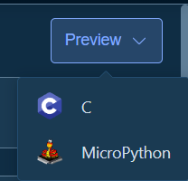

🛠️ Toolbar¶
The toolbar is located at the top of the workspace, providing quick access to project management and common functions.
5.1 Project Info Area¶
Project Name Display - Displays the name of currently open project
Return to Home - Click "Back" button or arrow left of project name - Return to project management home page - Will prompt to save unsaved changes
Save Status Indicator - Green checkmark: All changes saved - Yellow dot: Unsaved changes - Saving: Currently saving, shows loading animation
5.2 Edit Operations¶
Undo/Redo
- Undo: Ctrl + Z or click undo button
- Undo previous operation
- Can undo multiple steps continuously
- Redo: Ctrl + Shift + Z or Ctrl + Y or click redo button
- Redo previously undone operation
- Can redo multiple steps continuously
Supported Undoable Operations: - Add/delete components - Modify properties - Move components - Resize - Style modifications
5.3 View Control¶
Panel Expand/Collapse - Component Panel: Click to toggle display of component library and component tree - Properties Panel: Click to toggle display of properties panel - Collapse panels for more canvas space
View Options - Show Grid: Toggle canvas grid display - Show Guidelines: Toggle guideline display - Show Component Boundaries: Show boundary boxes for all components in canvas
5.4 Resource Manager¶
The resource manager is used to manage all resource files used in the project.
Image Resources¶
Add Image 1. Click "Resources" button in toolbar 2. Switch to "Images" tab 3. Click "Add Image" button 4. Select image file (currently only PNG supported) to import
Delete Image 1. Select image in resource list 2. Click "Delete" button
Font Resources¶
Add Font 1. Click "Resources" button in toolbar 2. Switch to "Fonts" tab 3. Click "Add Font" button 4. Select font file (currently only TTF supported) to import
Font Management 1. Select font in resource list 2. Click "Delete" button
5.5 Preview and Code Generation¶
Code Preview¶
View Generated Code: 1. Click "Code Preview" button in toolbar

- In the popup window, select code language:
- C Language - For standard LVGL projects
- MicroPython - For MicroPython environments
Workspace Docs: ← Back to Workspace | Canvas | Components | Tree | Properties | Toolbar | Shortcuts